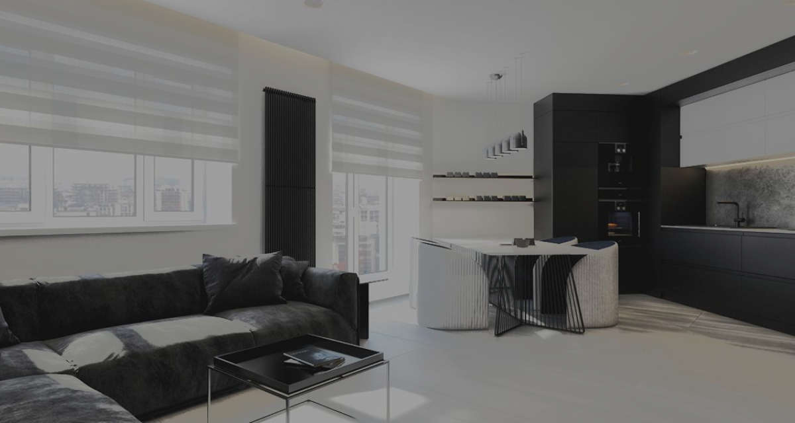
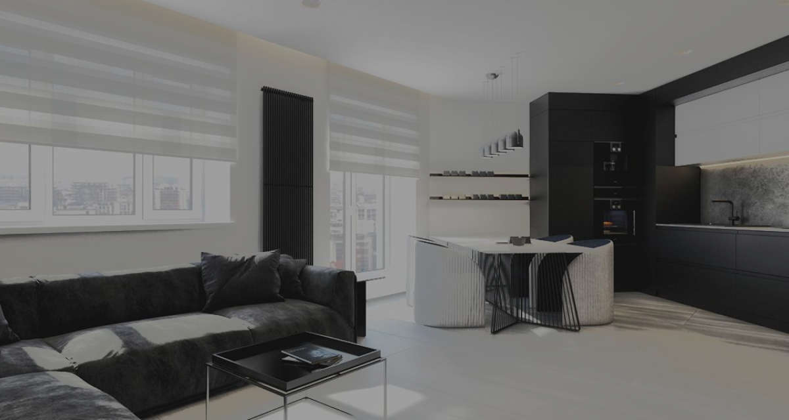

Space 4
your freedom

About
The geometric elements of the front facade are attracting attention, light and spacious rooms with five-meter ceilings immediately refers to the aesthetics of American classic Art Deco.
His influence quickly swept America in the early 19th century and shaped the way of life of that period which is characterized by rapid economic growth, the development of technology, mechanical engineering and the construction of iconic famous architectural structures, as well as the development of cinematography.
Project developers want to move you to the beginning of the 19th century and to convey the festive atmosphere of exquisite evening dresses, energetic dancing to the sounds of jazz, fun and the spirit of freedom surrounded by elegant interiors.
Location
Ukraine
Odessa st. Genyezka 36.
The ideal location provides the owners with a sense of clubbing, dignity and exclusive privacy.
Odessa City, the World Trade Center, famous theaters, museums, the best restaurants - the center of Odessa is a center of attraction 4 success, inspiration and strength.
Style
 

Style
The main facade of the building is executed in neoclassical style with protruding details and many windows. It is a well-defined composition of polished granite with rustic elements, large-format porcelain stoneware and custom-made decorative elements.
At the heart of the interiors in the house, aesthetics is a priority, where visible luxury is combined with comfort and any technical devices fit perfectly into it. This allows you to create really relevant and fashionable solutions within the framework of the established classics.
Benefits
Offers
Seven floors and 90 apartments

Apartments
There are apartments of various sizes from the second to the sixth floor, starting from 34 and up to 80 square meters, which are harmoniously planned and guaranteed maximum privacy and comfort.

Penthouses
There are several penthouses on the seventh floor of the building. High ceilings of 5.5 meters and an open plan to create a stylish and solemn interior are open at the disposal of their residents & evils.